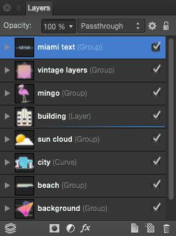

О панели «Слои»
Слои компонуются вместе для создания завершенной композиции на странице.
Эта панель может использоваться для создания композиции, состоящей из нескольких слоев, каждый из которых предназначен для работы с определенными элементами (например, линиями, фигурами, текстом, корректировками и т. д.).
На панели «Слои» можно выполнить перечисленные далее действия.
- Создание или удаление слоев.
- Выделение монтажных областей, слоев, групп и объектов.
- Упорядочивание и изменение порядка расположения слоев и монтажных областей.
- Отображение и скрытие монтажных областей, слоев, групп и объектов.
- Фиксация монтажных областей, слоев, групп и объектов.
- Обрезка объектов или слоев.
- Наложение непрозрачности на слой и монтажную область.
- Применение к слоям режимов и диапазонов наложения.
- Создание масок.
- Добавление корректировок и эффектов на слои.
- Создание фрагментов для экспорта.
- Исключение объекта из привязки (только нажатие правой кнопки на объекте).
- Отключение функции «Автопрокрутка» (панель прокручивается к содержимому слоя, если оно выбрано на странице)
 
На панели отображается приведенное далее содержимое.
- Непрозрачность: используется для регулирования непрозрачности выделенных элементов.
- Режим наложения: определение характера взаимодействия пикселей корректирующего слоя и пикселей расположенного ниже слоя. Выберите тип режима во всплывающем меню.
 Параметры наложения: нажмите для того, чтобы открыть диалоговое окно для настройки диапазонов и гаммы наложения и параметров сглаживания для выделенного слоя.
Параметры наложения: нажмите для того, чтобы открыть диалоговое окно для настройки диапазонов и гаммы наложения и параметров сглаживания для выделенного слоя. Фиксация / отмена фиксации: нажмите для того, чтобы заблокировать или разблокировать выбранные элементы с целью ограничить или разрешить их редактирование.
Фиксация / отмена фиксации: нажмите для того, чтобы заблокировать или разблокировать выбранные элементы с целью ограничить или разрешить их редактирование. Разворачивание/сворачивание: нажмите для того, чтобы развернуть или свернуть элемент для отображения вложенного содержимого.
Разворачивание/сворачивание: нажмите для того, чтобы развернуть или свернуть элемент для отображения вложенного содержимого.- Элемент: созданная монтажная область, слой, группа или объект с пиктограммами содержимого и указанием имени и типа элемента (в скобках).
 Скрыть / показать элемент: снимите флажок для того, чтобы скрыть элемент, и установите флажок — чтобы снова сделать его видимым.
Скрыть / показать элемент: снимите флажок для того, чтобы скрыть элемент, и установите флажок — чтобы снова сделать его видимым. Редактировать все слои: используется для выделения и редактирования всех объектов на всех монтажных областях и слоях (а не только на текущем слое).
Редактировать все слои: используется для выделения и редактирования всех объектов на всех монтажных областях и слоях (а не только на текущем слое). Создать маску слоя: используется для создания маски слоя для того, чтобы сделать видимой определенную область слоя, оставив остальную часть скрытой.
Создать маску слоя: используется для создания маски слоя для того, чтобы сделать видимой определенную область слоя, оставив остальную часть скрытой. Корректировки: используется для добавления корректирующего слоя к текущему слою в целях тональной и цветовой коррекции.
Корректировки: используется для добавления корректирующего слоя к текущему слою в целях тональной и цветовой коррекции. Эффекты слоя: используется для применения эффекта слоя к текущему выделенному слою.
Эффекты слоя: используется для применения эффекта слоя к текущему выделенному слою. Добавить слой: используется для создания нового пустого слоя поверх текущего выделенного слоя.
Добавить слой: используется для создания нового пустого слоя поверх текущего выделенного слоя. Добавить пиксельный слой: используется для создания нового пустого пиксельного слоя поверх текущего выделенного слоя.
Добавить пиксельный слой: используется для создания нового пустого пиксельного слоя поверх текущего выделенного слоя. Удалить слой: используется для удаления текущего выделенного слоя или монтажной области.
Удалить слой: используется для удаления текущего выделенного слоя или монтажной области. Создать фрагмент: используется для создания фрагмента из текущего выделенного элемента, который может быть экспортирован. Отображается только в режиме «Экспорт».
Создать фрагмент: используется для создания фрагмента из текущего выделенного элемента, который может быть экспортирован. Отображается только в режиме «Экспорт».